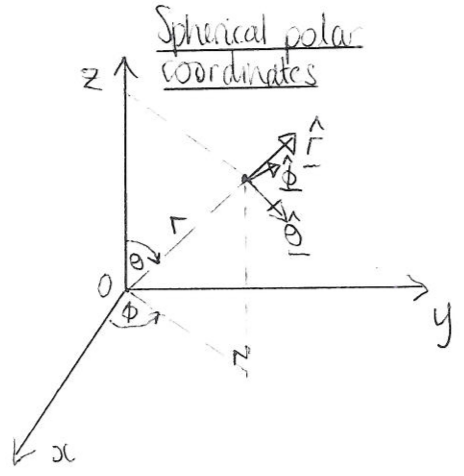

Section A.1 Converting between different coordinate systems
It is often convenient to convert a problem from one coordinate system to another, and, although converting scalar quantities is reasonably straightforward, converting vector quantities (such as the fluid velocity vector) is more complicated. This section briefly goes through how to convert vectors and scalars between different reference frames, as this seems to cause issues for students.
Subsection A.1.1 Converting between Cartesian coordinates and cylindrical polar coordinates
We write a position vector in Cartesians as
\begin{equation}
\boldsymbol{r}=x\boldsymbol{i}+y\boldsymbol{j}+z\boldsymbol{k},\tag{A.1.1}
\end{equation}
and as
\begin{equation}
\boldsymbol{r}=r\hat{\boldsymbol{r}}+z\hat{\boldsymbol{z}},\tag{A.1.2}
\end{equation}
in cylindrical polars. You need to know the following formulae for conversion from polar to Cartesian coordinates:
\begin{equation}
x=r\cos\theta,\qquad y=r\sin\theta,\qquad z=z,\tag{A.1.3}
\end{equation}
and these formulae for conversion back:
\begin{equation}
r=\sqrt{x^2+y^2},\qquad \theta=\arctan\left(\frac{y}{x}\right),\qquad z=z.\tag{A.1.4}
\end{equation}
Note that (A.1.4) can be derived by rearranging (A.1.3), and vice versa. You also need to know the following definitions of the unit vectors:
\begin{gather}
\hat{\boldsymbol{r}}=
\left(\begin{matrix}
\cos\theta\\\sin\theta\\0
\end{matrix}\right)
=\cos\theta\boldsymbol{i}+\sin\theta\boldsymbol{j},\tag{A.1.5}\\
\hat{\boldsymbol{\theta}}=
\left(\begin{matrix}
-\sin\theta\\\cos\theta\\0
\end{matrix}\right)
=-\sin\theta\boldsymbol{i}+\cos\theta\boldsymbol{j},\tag{A.1.6}\\
\hat{\boldsymbol{z}}=\hat{\boldsymbol{k}},\tag{A.1.7}
\end{gather}
and it might help to know that \(\hat{\boldsymbol{\theta}}=\de\hat{\boldsymbol{r}}/\de\theta\text{,}\) which can be used to remember \(\boldsymbol{\theta}\) if you struggle. In addition, you need to know
\begin{equation}
\boldsymbol{i}=\cos\theta\hat{\boldsymbol{r}}-\sin\theta\hat{\boldsymbol{\theta}},
\qquad
\boldsymbol{j}=\sin\theta\hat{\boldsymbol{r}}+\cos\theta\hat{\boldsymbol{\theta}},
\qquad
\boldsymbol{k}=\hat{\boldsymbol{z}},\tag{A.1.8}
\end{equation}
which can if necessary be derived by rearranging the formulae (A.1.5), (A.1.6) and (A.1.7). As you might expect, these equations are all consistent with one another, so if you substitute (A.1.8) into (A.1.1) and use (A.1.3) to rewrite \(x\) and \(y\) in terms of \(r\) and \(\theta\text{,}\) you will end up with (A.1.2).
Scalar and vector quantities are converted as follows:
-
Conversion of scalar quantities: To convert a scalar quantity (e.g. lengths, pressures) from Cartesians to polars you substitute (A.1.3) and to go from polars to Cartesians use (A.1.4). For example if\begin{equation*} p=x+3y^2 \end{equation*}in Cartesians then, using (A.1.3),\begin{equation*} p=r\cos\theta+3r^2\sin^2\theta \end{equation*}in polars.
-
Conversion of vector quantities: To convert a vector from cylindrical polar to Cartesian coordinates you will have a vector written something like this:\begin{equation} \bu= u_r(r,\theta,z,t)\hat{\boldsymbol{r}} +u_\theta(r,\theta,z,t)\hat{\boldsymbol{\theta}} +u_z(r,\theta,z,t)\hat{\boldsymbol{z}},\tag{A.1.9} \end{equation}where \(u_r\text{,}\) \(u_\theta\) and \(u_z\) are all given scalar expressions. You need to end up with something of this form:\begin{equation} \bu=u_x(x,y,z,t)\boldsymbol{i}+u_y(x,y,z,t)\boldsymbol{j}+u_z(x,y,z,t)\boldsymbol{k}.\tag{A.1.10} \end{equation}Two methods:
-
Substitute the expressions (A.1.5), (A.1.6) and (A.1.7) into (A.1.9), and then use (A.1.4) to get everything in terms of the Cartesian coordinates \(x\) and \(y\text{.}\) To convert the other way, substitute (A.1.8) into (A.1.10) and then use (A.1.3) to replace any instances of \(x\) or \(y\) by \(r\) and \(\theta\text{.}\)
-
Alternatively, take the dot product of (A.1.10) with \(\hat{\boldsymbol{r}}\text{,}\) \(\hat{\boldsymbol{\theta}}\) and \(\hat{\boldsymbol{z}}\text{,}\) respectively, and simplify the resulting expressions using (A.1.5), (A.1.6) and (A.1.7), which gives\begin{gather} u_r=u\cos\theta+v\sin\theta,\tag{A.1.11}\\ u_\theta=-u\sin\theta+v\cos\theta,\quad\tag{A.1.12}\\ u_z=w.\tag{A.1.13} \end{gather}Similarly, taking the dot product of (A.1.9) with \(\boldsymbol{i}\text{,}\) \(\boldsymbol{j}\) and \(\boldsymbol{k}\text{,}\) respectively, and simplifying leads to\begin{gather} u=u_r\cos\theta-u_\theta\sin\theta,\quad\tag{A.1.14}\\ v=u_r\sin\theta+u_\theta\cos\theta,\quad\tag{A.1.15}\\ w=u_z.\tag{A.1.16} \end{gather}
-
Subsection A.1.2 Converting between Cartesian coordinates and plane polar coordinates
Two-dimensional plane polars \((r,\theta)\) work like the first two coordinates of cylindrical polars. Thus converting between plane polars and Cartesian coordinates works the same as for cylindrical coordinates and Cartesians Subsection A.1.1, except there is no third dimension.
See for example Exercise 2.3.3 Part (b).
Subsection A.1.3 Converting between Cartesian coordinates and spherical polar coordinates

We write a position vector in Cartesians as (A.1.1)
\begin{equation*}
\boldsymbol{r}=x\boldsymbol{i}+y\boldsymbol{j}+z\boldsymbol{k},
\end{equation*}
\begin{equation}
\boldsymbol{r}=r\hat{\boldsymbol{r}}.\tag{A.1.17}
\end{equation}
You need the following formulae for conversion from spherical polar to Cartesian:
\begin{equation}
x=r\sin\theta\cos\phi,\qquad y=r\sin\theta\sin\phi,\qquad z=r\cos\theta,\tag{A.1.18}
\end{equation}
and these formulae for conversion back:
\begin{gather}
r=\sqrt{x^2+y^2+z^2},\tag{A.1.19}\\
\theta=\arctan\left(\frac{\sqrt{x^2+y^2}}{z}\right),\qquad\tag{A.1.20}\\
\phi=\arctan\left(\frac{y}{x}\right).\tag{A.1.21}
\end{gather}
The unit vectors in spherical polars are given by
\begin{align}
\hat{\boldsymbol{r}}=&\left(\begin{matrix}\sin\theta\cos\phi\\\sin\theta\sin\phi\\\cos\theta\end{matrix}\right)
=\sin\theta\cos\phi\,\boldsymbol{i}+\sin\theta\sin\phi\,\boldsymbol{j}+\cos\theta\,\boldsymbol{k},\tag{A.1.22}\\
\hat{\boldsymbol{\theta}}=&\pd{\hat{\boldsymbol{r}}}{\theta}
=\left(\begin{matrix}\cos\theta\cos\phi\\\cos\theta\sin\phi\\-\sin\theta\end{matrix}\right)
=\cos\theta\cos\phi\,\boldsymbol{i}+\cos\theta\sin\phi\,\boldsymbol{j}-\sin\theta\,\boldsymbol{k},\tag{A.1.23}\\
\hat{\boldsymbol{\phi}}=&\left.\pd{\hat{\bf r}}{\phi}\right/\left|\pd{\hat{\bf r}}{\phi}\right|=\left(\begin{array}{c}-\sin\phi\\\cos\phi\\0\end{array}\right)=-\sin\phi\,{\bf i}+\cos\phi\,{\bf j},\tag{A.1.24}
\end{align}
and rearranging these leads to
\begin{align}
\boldsymbol{i}=&\sin\theta\cos\phi\,\hat{\boldsymbol{r}}+\cos\theta\cos\phi\,\hat{\boldsymbol{\theta}}-\sin\phi\,\hat{\boldsymbol{\phi}},\tag{A.1.25}\\
\boldsymbol{j}=&\sin\theta\sin\phi\,\hat{\boldsymbol{r}}+\cos\theta\sin\phi\,\hat{\boldsymbol{\theta}}+\cos\phi\,\hat{\boldsymbol{\phi}},\tag{A.1.26}\\
\boldsymbol{k}=&\cos\theta\,\hat{\boldsymbol{r}}-\sin\theta\,\hat{\boldsymbol{\theta}}.\tag{A.1.27}
\end{align}
-
Conversion of vector quantities: To convert a vector from spherical polar to Cartesian coordinates you will start with a vector written something like this:\begin{equation} \bu=u_r(r,\theta,\phi,t)\hat{\boldsymbol{r}} +u_\theta(r,\theta,\phi,t)\hat{\boldsymbol{\theta}} +u_\phi(r,\theta,\phi,t)\hat{\boldsymbol{\phi}},\tag{A.1.28} \end{equation}and you want to write it like this:\begin{equation} \bu=u_x(x,y,z,t)\boldsymbol{i}+u_y(x,y,z,t)\boldsymbol{j}+u_z(x,y,z,t)\boldsymbol{k}.\tag{A.1.29} \end{equation}As with Cartesians to cylindrical polars, there are two methods:
-
Substitute the expressions (A.1.22), (A.1.23) and (A.1.24) into (A.1.28) and use (A.1.19), (A.1.20) and (A.1.21) to get everything in terms of the Cartesian coordinates \((x,y,z)\text{.}\) To convert from Cartesians to sphericals, substitute (A.1.25), (A.1.26) and (A.1.27) into (A.1.29) and use (A.1.18) to replace any instances of \((x,y,z)\) with \((r,\theta,\phi)\text{.}\)
-
Alternatively, take the dot product of (A.1.28) with \(\hat{\boldsymbol{i}}\text{,}\) \(\hat{\boldsymbol{j}}\) and \(\hat{\boldsymbol{k}}\) in turn, and use (A.1.22), (A.1.23) and (A.1.24) or (A.1.25), (A.1.26) and (A.1.27) to simplify the dot products of the unit vectors. You will end up with the following conversion formulae:\begin{align*} u_r=&u\sin\theta\cos\phi+v\sin\theta\sin\phi+w\cos\theta,\\ u_\theta=&u\cos\theta\cos\phi+v\cos\theta\sin\phi-w\sin\theta,\\ u_\phi=&-u\sin\phi+v\cos\phi. \end{align*}To convert back, take the dot product of (A.1.29) with \(\hat{\boldsymbol{r}}\text{,}\) \(\hat{\boldsymbol{\theta}}\) and \(\hat{\boldsymbol{z}}\) in turn, and use (A.1.22), (A.1.23) and (A.1.24) to simplify to give\begin{align*} u=&u_r\sin\theta\cos\phi+u_\theta\cos\theta\cos\phi-u_\phi\sin\phi,\\ v=&u_r\sin\theta\sin\phi+u_\theta\cos\theta\sin\phi+u_\phi\cos\phi,\\ w=&u_r\cos\theta-u_\theta\sin\theta. \end{align*}
-
What you need to know: You might have to do some limited converting of expressions between spherical and Cartesian coordinate systems, but we would give you all the formulae (A.1.19), (A.1.20) and (A.1.21), and (A.1.18), and the equations for conversion of the unit vectors, as they are difficult to remember.
\begin{equation*}
\hat{\boldsymbol{r}}
=\sin\theta\cos\phi\boldsymbol{i}
+\sin\theta\sin\phi\boldsymbol{j}
+\cos\theta\boldsymbol{k}.
\end{equation*}
Subsection A.1.4 General conversion
In the other cases you need to follow the same general principles as we followed in the previous sections. In the most general case you might have two coordinate systems \(S\) and \(S'\) with coordinates \((r_1,r_2,r_3)\) and \((r_1',r_2',r_3')\text{,}\) respectively, and unit vectors \(\be_1\text{,}\) \(\be_2\text{,}\) \(\be_3\) and \(\be_1'\text{,}\) \(\be_2'\text{,}\) \(\be_3'\text{,}\) respectively. To convert between the systems, you need to write down three (if in 3D) relationships between \(r_1\text{,}\) \(r_2\text{,}\) \(r_3\) and \(r_1'\text{,}\) \(r_2'\text{,}\) \(r_3'\text{,}\) which allows the conversion of scalar quantities. To convert vectors you also need formulae for \(\be_1\text{,}\) \(\be_2\text{,}\) \(\be_3\) in terms of and \(\be_1'\text{,}\) \(\be_2'\text{,}\) \(\be_3'\text{.}\) You can convert vectors by substituting the relationships between the unit vectors in and then substituting the relationships between the coordinates. You can only use the alternative methods of converting vectors by taking the dot product if both coordinate systems are orthogonal.
Exercise 7.9.4 gives an example of a question involving changing coordinates in a more general case.
Subsection A.1.5 Differential operators
The gradient and curl operators are converted as
\begin{align}
\nabla \phi \amp= \pd{\phi}{r}\be_r + \frac{1}{r} \pd{\phi}{\theta}\be_{\theta} \tag{A.1.30}\\
\nabla \times \bu \amp= \left(\frac{1}{r} \pd{(ru_\theta)}{r} - \frac{1}{r} \pd{u_r}{\theta}\right) \bk \tag{A.1.31}
\end{align}
You would always be given these formulae in an exam question if you needed them.